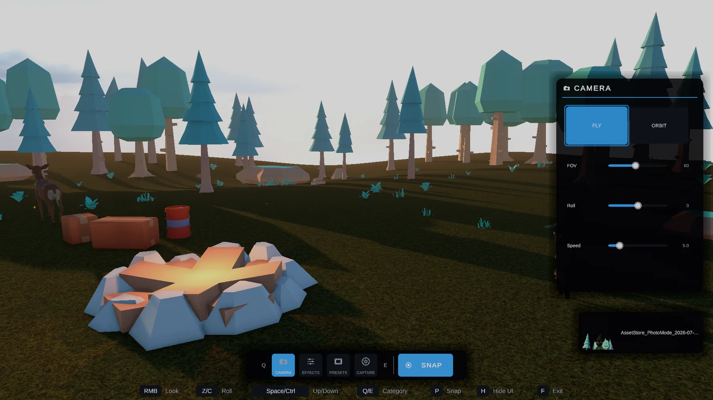
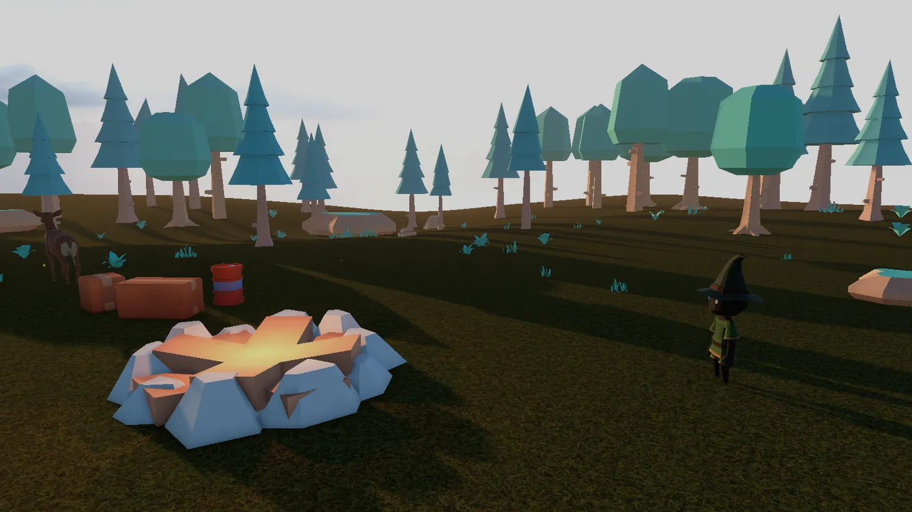
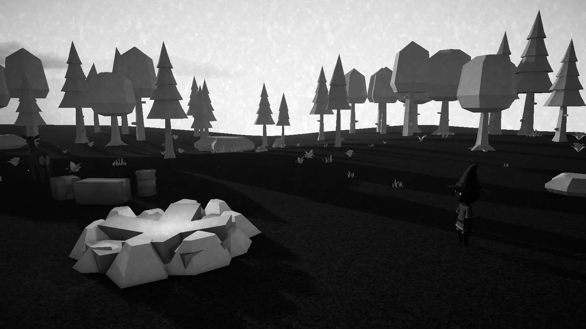
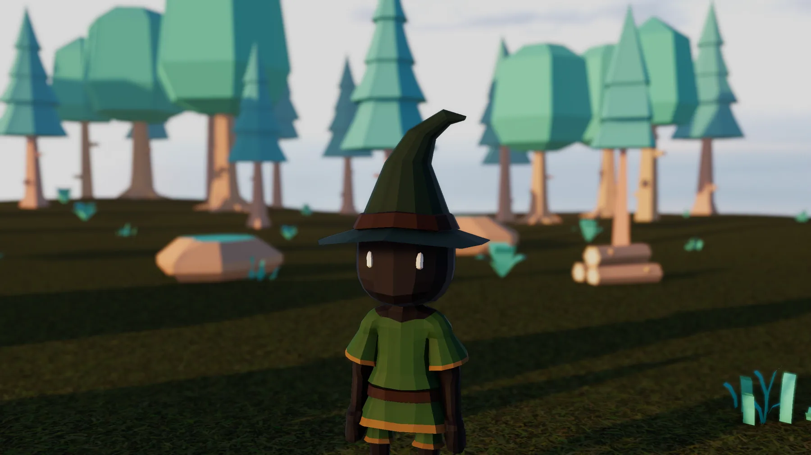
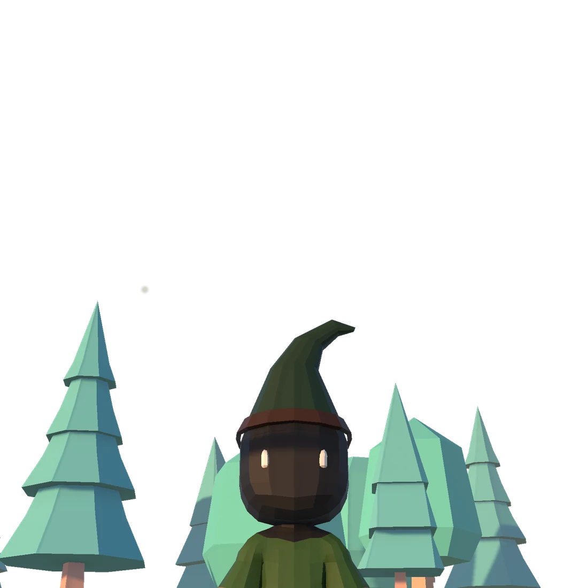
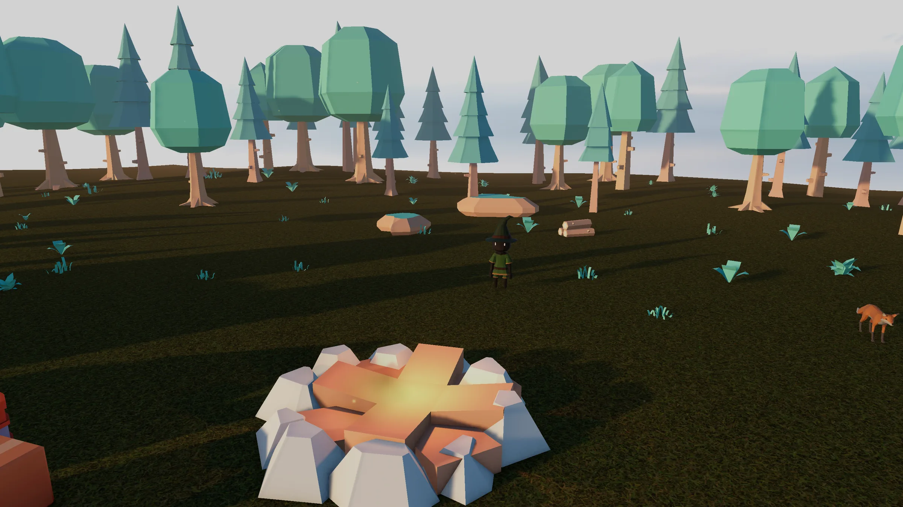
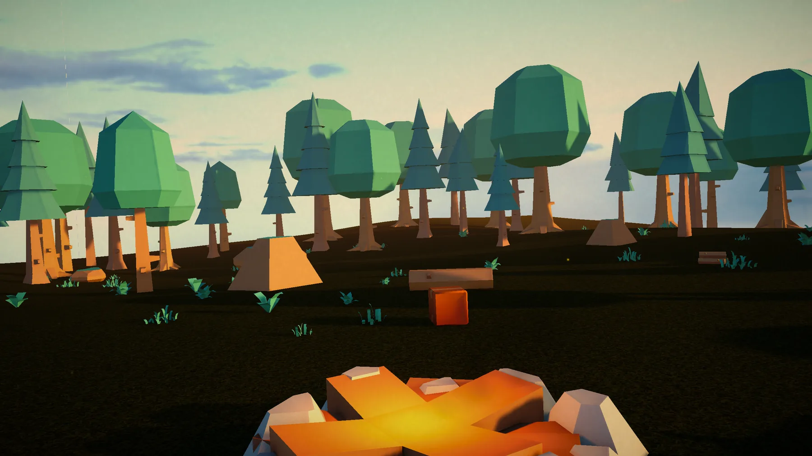
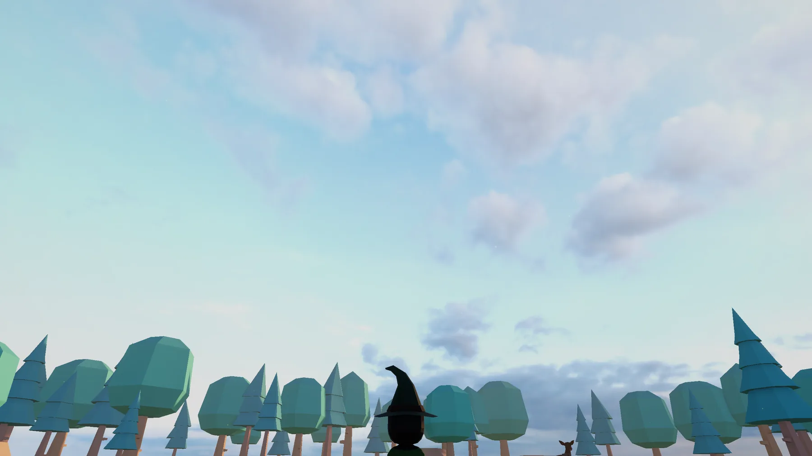
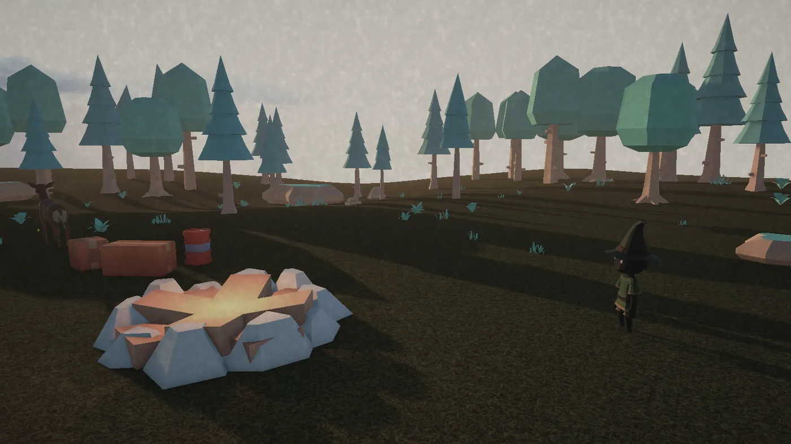

Photo Mode Pro · v1.4.0
One prefab. Every pipeline.
The photo mode your players expect.
Press one button: the game pauses, a free camera takes over, a clean dark UI slides in, and a supersampled PNG lands on disk. Exit, and your game is exactly as you left it.

Why it wins
Press one button. Ship one feature players actually ask for.
A real free camera
Fly and orbit modes, sprint, smoothing, FOV zoom, roll, optional collision and a distance clamp. The AAA control split: sticks always fly the camera, D-pad drives the UI; on desktop, hold RMB to look.
Grade in real units
Exposure (EV), contrast, saturation, temperature, vignette, film grain and bokeh depth of field with focus distance and a perceptual log f-stop slider. Six presets — add your own as ScriptableObjects.
Capture done right
1×/2×/4× supersampling, async readback where possible, transparent
background for key art, collision-safe file names, capture flash + thumbnail
toast, and an OnPhotoCaptured(path, thumbnail) event.
Your frame rate won't notice
Zero per-frame GC allocations while open — slider drags included — asserted by allocation gates in the test suite that ships in the package. While closed, nothing runs but a toggle poll.
Exit restores everything, exactly
Time scale, audio, cursor, camera, hidden HUD canvases, hidden player. Renderers are hidden, not GameObjects, so physics never pops. Scene loads auto-close it cleanly. Works with or without an EventSystem.
Integrated before your coffee cools
The Setup Wizard checks your project with green/yellow/red lights and one-click fixes, then adds the configured prefab to your scene. About two minutes in most projects.
Six looks, one click
Presets players actually use
Clean, Noir, Vivid, Warm, Cool, Vintage — graded in natural units, applied through your pipeline's own post-processing. Every image below is a real capture from the shipping demo scene.

Drag to compare — Clean vs. Noir

CLEAN NOIRDepth of field
Bokeh with a real f-stop
Focus distance plus an aperture slider that walks true log stops from f/0.7 to f/16 — equal slider travel, equal stops, like a camera. Because your players' thumbs deserve better than a linear blur knob.
Shot at f/1.4, focused on the adventurer. The depth of field runs through your pipeline's own DoF — URP, HDRP or PPv2 — so it matches the rest of your game.


Transparent capture
Your photo mode is also your key-art rig
Flip one toggle and captures come out with a clean alpha channel — characters and props cut straight out of the world, ready for store capsules, thumbnails and marketing.
The checkerboard you see is this website; the transparency is the PNG. Supported on URP and Built-in; HDRP hides the toggle (it can't produce clean alpha without changing your HDRP asset — and we'd rather tell you that here than in your bug tracker).
No dead sliders
The honest matrix
One prefab, three pipelines, and a published capability matrix that
includes what each pipeline can't do. Controls a pipeline can't
honor hide themselves — players never see a dead slider, and
PhotoModeController.ActiveCapabilities reports it to your code.
| Effect | URP | HDRP | Built-in (PPv2) | Built-in (fallback) |
|---|---|---|---|---|
| Exposure | ✔ | ✔ | ✔ | ✔ |
| Contrast | ✔ | ✔ | ✔ | ✔ |
| Saturation | ✔ | ✔ | ✔ | ✔ |
| Temperature | ✔ | ✔ | ✔ | — |
| Vignette | ✔ | ✔ | ✔ | ✔ |
| Film grain | ✔ | ✔ | ✔ | — |
| Depth of field | ✔ | ✔ | ✔ | — |
| Transparent capture | ✔ | — | ✔ | ✔ |
Details and per-version notes in the per-pipeline documentation.
Gallery
Straight out of the demo scene
Every shot below was captured through Photo Mode Pro's own capture pipeline — supersampled, graded in-product, saved as PNG. Click to enlarge.




Engineering
Built like a system,
not a script
- Zero per-frame GC while open and idle, and while dragging sliders — enforced by allocation gates in the shipped test suite.
- Exact state restoration of time scale, audio, cursor and camera; auto-close on scene loads.
- Plays nice with Cinemachine and URP camera stacking — it never moves your gameplay camera; it spawns its own.
- IL2CPP + high stripping verified on Unity 2021.3, 2022.3 and Unity 6.
- Both input systems — new Input System, legacy Input Manager, or Both. Hint chips update when you remap.
Integration
Three lines, or none
Drop the prefab and you're done — or script it. The public API is small, XML-documented and stable.
using PhotoModePro;
// Open and close from your pause menu:
PhotoModeController.Instance.EnterPhotoMode();
PhotoModeController.Instance.ExitPhotoMode();
// Ship photos to your share sheet / gallery:
PhotoModeController.Instance.OnPhotoCaptured += (path, thumb) =>
{
ShareSheet.Open(path, thumb);
};More in Events & Scripting — events, UnityEvent mirrors, capability checks, pause-menu patterns.
Due diligence
Questions a careful buyer asks
Will it work with my render pipeline?
URP (12+), HDRP (12+) and Built-in are all supported from the same prefab. The backend is detected at runtime; on Built-in you get the full set with Post Processing Stack v2 installed, or a fallback (exposure/contrast/saturation/vignette) without it. The matrix above is the complete, honest picture.
Will it fight my input setup or Cinemachine?
Both the new Input System and the legacy Input Manager are supported (and Active Input Handling = Both). It plays nice with Cinemachine and URP camera stacking, and it never moves your gameplay camera: it spawns its own and restores the view exactly on exit.
Is it safe to add this late in production?
That's the design brief. Zero per-frame GC while open, nothing but a toggle poll while closed, exact state restoration, auto-close on scene loads, and an EditMode + PlayMode test suite ships in the package so you can verify in your project. IL2CPP with high managed stripping is verified.
What platforms are supported?
Windows, macOS and Linux standalone (Mono + IL2CPP), Unity 2021.3 LTS through Unity 6. WebGL capture-to-disk is not supported; mobile touch UI and consoles are untested and not claimed. We'd rather you know now.
Can players use it with a gamepad only?
Yes, fully. Sticks fly the camera, D-pad navigates the UI, focus rings and auto-scroll keep the selection visible, and hint chips show the real bindings (they update if you remap keys).
Can I reskin the UI to match my game?
Colors, font, sprites, motion and UI sounds all live on a single theme asset. The panel is standard UGUI underneath. See Theming the UI.
What's in the demo scene, and can I delete it?
A forest clearing at golden hour with a playable adventurer, campfire and wandering critters — all CC0 art (Quaternius, Kenney, Poly Haven, ambientCG, OpenGameArt) with full attributions shipped in the package. The Demo folder is safe to delete; the product is the photo mode system.
Photo Mode Pro is on its way to the Asset Store
The package is submitted and in review. Leave your email and you'll get exactly two messages: launch day, and the day the launch discount ends.
support.dan.max@gmail.com